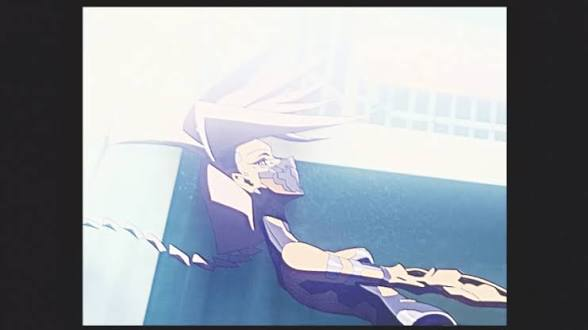
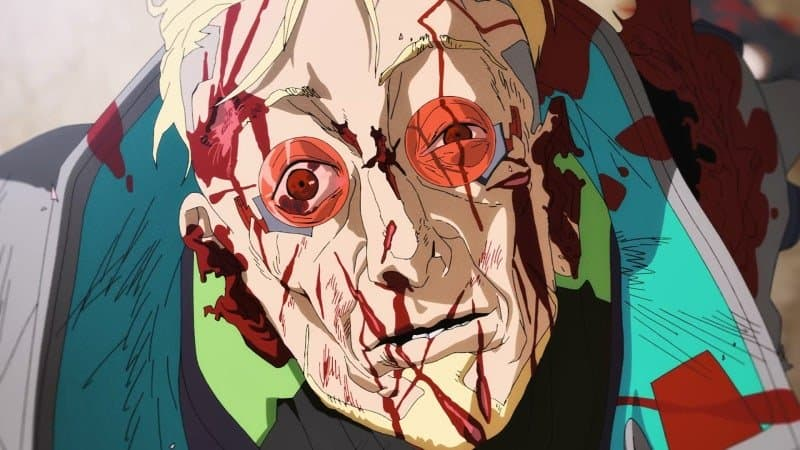
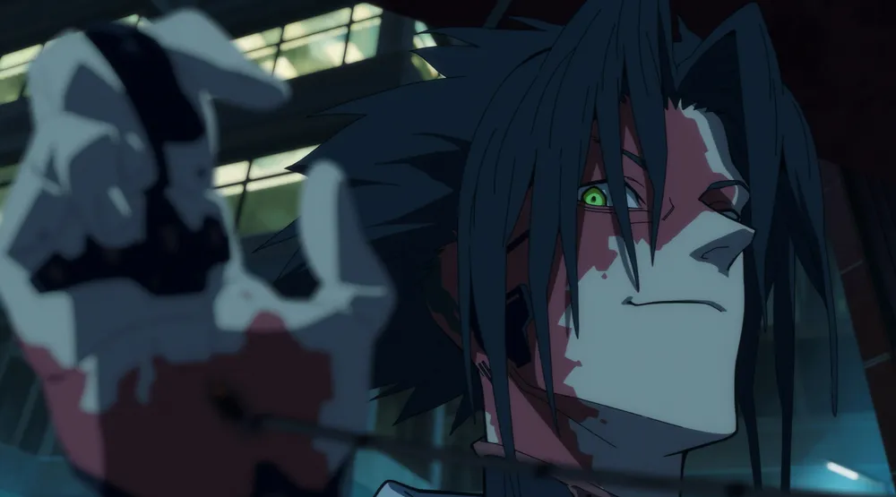
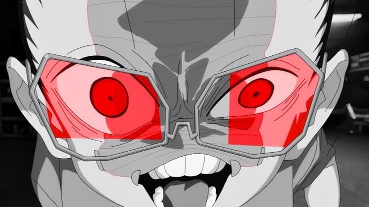
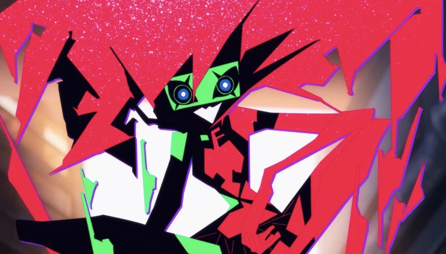
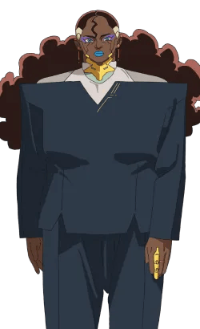
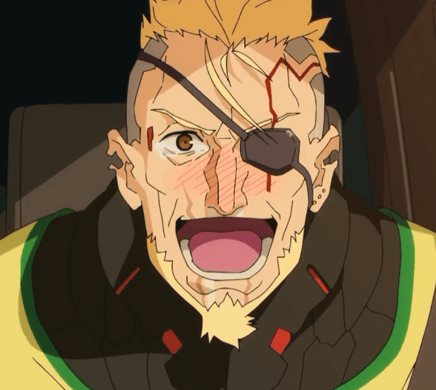

스포주의

기대한 것 : 기계적이고 곤충과 유사한 움직임, 멘티스 블레이드를 이용한 화려한 체술로 적을 제압하는 임플란트 도살자.
실제 : 엄마 가슴에 대못박는 짓만 하는 발암 잼민이(사정은 있다지만....), 막상 액션 보여준것도 없음.

기대한 것 : 마지막에 딸을 지키지 위해서, 사이버 사이코가 되는것을 선택하고 미친듯이 싸우다가 죽는 좆간지 버서커.
실제 : 살았음 무능중년. 심지어 딸도 알고보니까 NTR임 ㅅㅂ ㅋㅋㅋㅋㅋㅋㅋ

기대한 것 : 처절하게 마지막까지 진실을 파해치다가 결국 복수에 눈이 멀어 죽는 광기의 헤커
실제 : 사이버 미소녀 좋아 청년.

기대한 것 : 자신의 창조물인 전자 딸내미를 통제하려는 창조물에 애정 없는 매드 사이언티스트.
실제 : 진짜 딸 사랑했음.

기대한 것 : 세상 모든걸 부수려고 하는 ai
실제 : 그냥 놀고팠던 심심했음 전자청년.
근데 다들 자기한테 복수만 바래서 삔또 상함.
엄마 말 진짜 뒤지게 안듣고 2번이나 감전시킨 폐륜아.

기대한 것 : 기업의 이익과 딸의 안위 사이에서 걱정하는, 사내 정치와 줄타기의 달인.
실제 : 오또케 ㅠㅠ 뭐좀 해봐 킹 ㅠㅠ
__________

진짜 대체 뭔 엔딩이지..?


호프 시즌2 임?